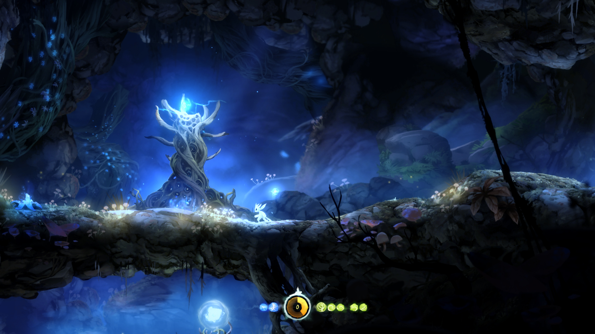
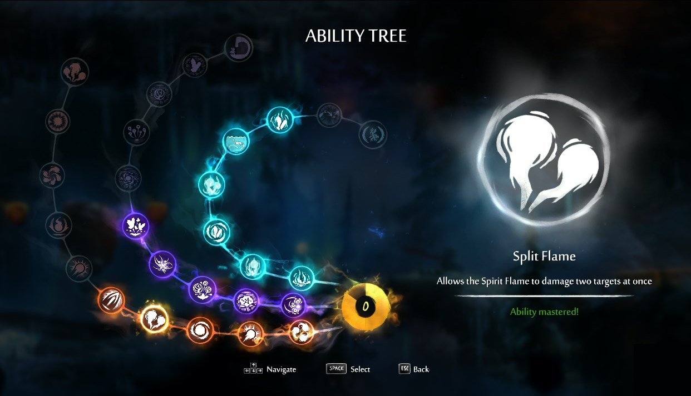
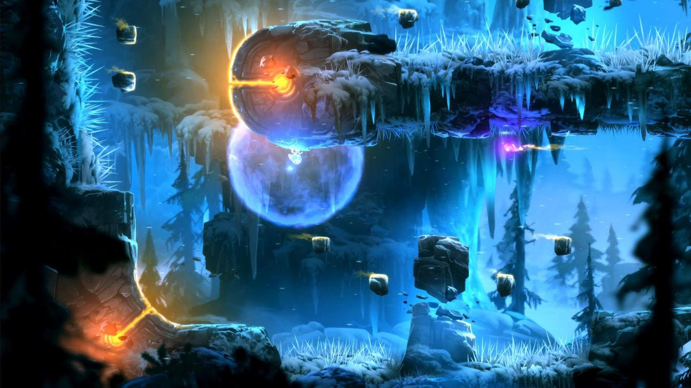
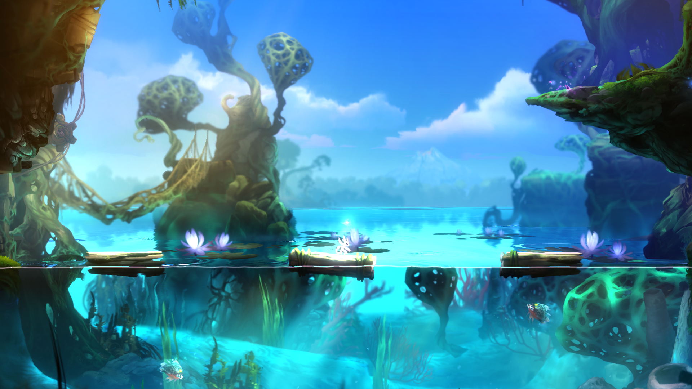

Egy indie gyöngyszem
Én mindig is támogattam az indie cégeket, mert nem kevés zseniális egyed van amit az ilyen kisebb cégek alkotnak. A kevesebb pénz okozta korlátozások miatt jelentősen nehezebb helyzetben vannak, hogy valami olyat alkossanak ami megfogja a játékost, ezért az esetek többségében az indie játékok nem a grafikával, zenével vagy játékmechanikával magasodnak a többi játék fölé hanem a kreativitásukkal. Bár ennek teljesen ellent megy az a játék amiről szeretnék beszélni ami nem más mint az Ori and The Blind Forest, ami indie mivolta ellenére, olyan élményt adott amit semmilyen más tripla A-s játék nem tudott. Megmondom őszintén eleinte fogalmam nem volt róla hogy az Ori and The Blind Forest egy indie játék, mert olyan hihetetlenül lett megcsinálva, hogy az embernek (legalábbis nekem) eszébe nem jutna, hogy ezt nem egy hatalmas cég csinálta. A Moon Studios 2015 adta ki ezt a mestermunkát, amit abban az évben jelöltek is több kategóriában a Game Awards-on (Best Independent Game, Best Score/Soundtrack, Best Action/Adventure, Best Art Direction) amik közül meg is nyerte a Best Art Direction díjat. A többi Indie játék ellentétében, az Ori and The Blind Forest-nek az erőssége nem a kreativitásban rejlik, hanem minden másban. Ez egy 2D-s Metroidvania platformer játék ami azt jelenti, hogy egy nagy összefüggő "pálya" van amit be kell járni és fel kell fedezni. Ez az alap koncepció tulajdonképpen semmi nagyon újjal nem rendelkezik. Ez elmondható a mechanikáról, világfelépítésről, történetről. A játék nagyszerűsége az ezeknek a kidolgozottságában rejlik.
Játékmenet
Véleményem szerint amiben a lejobban kimagaslik az Ori and The Blind Forest (ami nekem legjobban tetszett), az az iránytás, ami olyan vajkönnyű amivel még nem találkoztam ezelőtt. Ez volt az a játék amiben a barangolás szabályosan élvezet volt. Egy idő után olyan képességeket kapsz amivel konkrétan az ellenfelek is segítik a mozgásodat. Olyanokkal lehet szórakozni például, hogy mekkora távot tudsz megtenni földet érés nélkül. Hihetetlenül precízen lehet mozogni és a platform kihívások is intenzívek, szórakoztatóak és kihívásokkal teliek, így nem megy el az ember kedve sok próbálkozás után sem. Rengetegszer mész ugyanazon a pályaszakaszon többször is(ha completionist felfogású vagy akkor pláne), de az írányítás folyékonysága miatt közel sem lesz annyira monoton és unalmas mint mondjuk más hasonló stílusú játéknál.
 
A játékmenet nem nagyon különbözik az alap Metroidvania sémától. Ahogy haladsz a játékban, egyre több képességed lesz amikkel egyre több helyre leszel képes eljutni. Két fajta képesség van:
- Az alap skill-ek amiket mindenképpen megkapsz ahogy haladsz a sztoriban, vagyis amik szükségesek a tovább haladáshoz. Ezeket ilyen kis lélekfáknál tudod megszerezni.
- Azok a képességek amiket skill pontokkal tudsz kifejleszteni, amik közül valamelyik a meglévő képességeidet fejleszti(pl. erősíti a támadásod), valamelyik pedig újat ad(pl. víz alatti lélegzés).
A harc rendszerben gyakorlatilag nincs nagyon új mechanika a sima mászkáláshoz képest, mivel csak egyetlen támadás gomb van. Tehát sima button smash, de különböző képességekkel együtt (amit alapvetően a barangoláshoz használsz) remekül lehet az ellenfelek között cikázni és így a harcoknak van egy nagyon jó kis stílusa. Ennek ellenére szerintem ez az egyetlen aspektus amit kicsit jobban kidolgozhattak volna mert ebben bőven lett volna potenciál(szerencsére a folytatásban ezt megvalósították) de ez tényleg csak szőrszál hasogatás. A játéknak még az ad egy extra ízt, hogy a mentés is technikailag egy skill, tehát manát kell használnod hozzá. Ennek köszönhetően szinte bármikor menthetsz ha van rá elég manád, így sosem kell attól aggódni, hogy nem mentett a játék, vagy rossz helyen lenne mentés, mert ezt teljes mértékben te mondhatod meg. A játék kb. 8-11 óra felfedezéssel együtt első próbálokozásnál (bár ez több mindentől is függ).
Grafika
Szerintem az a tény, hogy megnyerte 2015-ben aBest Art Direction díjat, mindent elmond arról, hogy milyen szép is a játék. Még csak hasonlóval sem találkoztam előtte. Nagyon részletesen és gyönyörűen van megcsinálva a környezet. Tulajdonéppen a színskála minden árnyalat megtalálható valahol a játékban. A helyszínek bár nem egyediek de változatosak(víz alatt, erdő, fagyott világ, láva világ,stb...). Hiába 2D-s, az előtérben és a háttérben elhelyezett dolgok megadják a térhatást. De pofázhatok bármennyit, ezt látni kell.
 Zene
Én mindig is annak a híve voltam, hogy a zene hatalmasat tud dobni bármin(legyen az játék, film, sorozat). Bár a játék majdnem minden része zseniálisan van megoldva, a zenéje nélkül nem szeretném annyira mint amúgy. Szabályosan libabőrös vagyok pár jelenetnél amikor felcsendül a dal. Szerintem egy jó soundtrack egyik legfontosabb tulajdonsága, hogy reflektál arra amiben szerepel. Ez alatt azt értem, hogy mikor meghallod az egyik zenét, akkor egyből elkap a játék hangulata, atmoszférája. Ez nagyon erősen igaz az Ori-nál. Amikor érzelmesnek kell lennie, akkor érzelmes, amikor pörgősnek kell lennie akkor pörgős.
Ez a kis részlet szinte mindent tartalmaz ami miatt zseniális ez a játék, beleértve a zenét, grafikát, hangulatot és az akciót.
Történet
Talán ezt tartom a leggyengébb láncszemnek az összes közül, de ezt úgy mondom, hogy erre is kb. 4,5/5 pontot adnék. Nagyon szívbe markoló történettel álltak elő ami abszolút sírás veszélyes és nagyon meg tudja ragadni az embert. Az egyetlen oka amiért nem tudok a történetre 5 pontot adni az az, hogy nem éreztem hogy lenne mondani valója. Őszintén nem tudom eldönteni, hogy csak én voltam annyira hülye, hogy nem jött át vagy tényleg nem akart semmi mélyet elmodani. Ezzel nem azt mondom, hogy nem szólt semmiről, mert ez nem igaz. Sőt biztos vagyok benne, hogy sok emberben hihetetlen mély nyomot hagyott a történet de ez is (mint minden más amit eddig mondtam)szubjektív. De annak érdekében, hogy nehogy rossz következtetést vonjatok le, még egyszer elmondom, hogy nekem nagyon tetszett a történet, voltak nagyon erős pillanatok de nem emelkedett ki annyira mint a játék többi eleme.
Végszó
Összefoglalónak annyit tudok mondani, hogy mindenkinek teljes szívemből csak ajánlani tudom az Ori and The Blind Forest játékot. Akit kicsit is érdekel a jó platforming, jó irányítás, jó zene, gyönyörű grafika, szívbemarkoló történet (tehát szinte mindenki) annak mindenképpen kötelező. Jó szórakozást hozzá. ;)